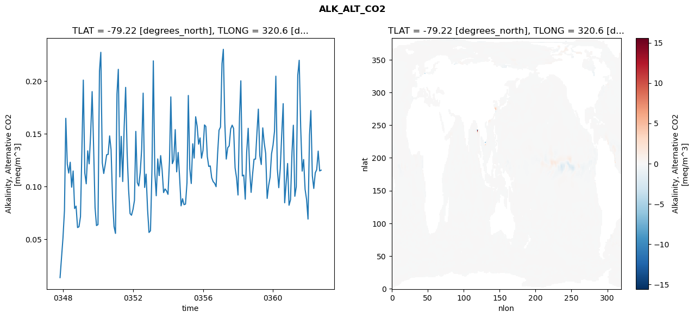
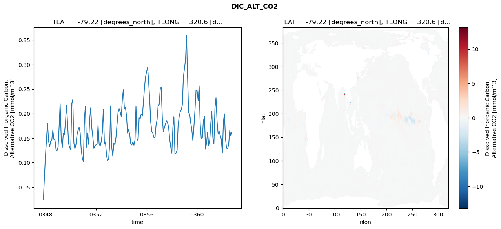
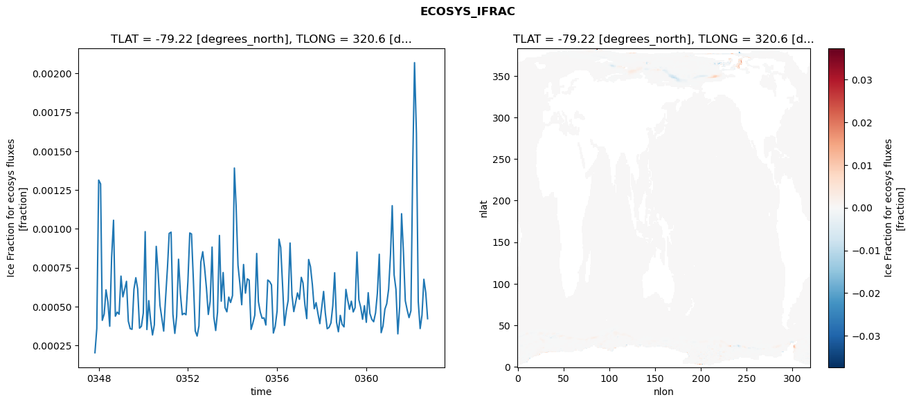
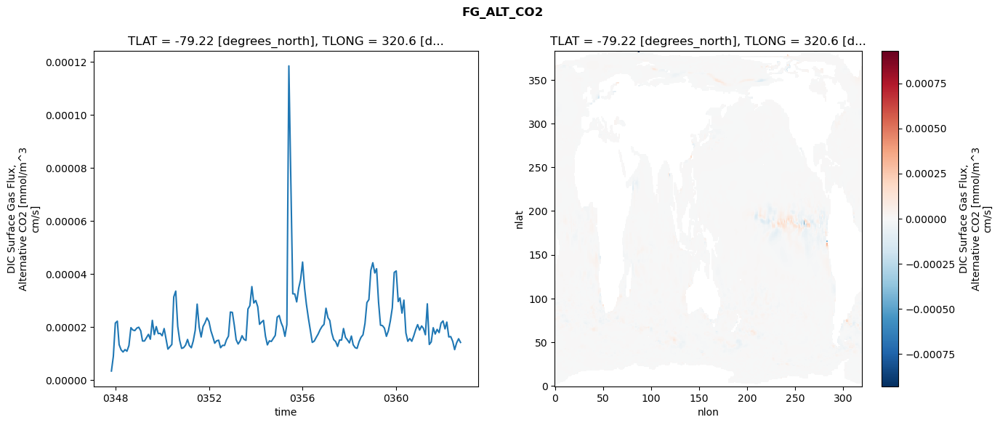

glb-dor_North_Atlantic_basin_006_1999-10-01_00027#
Simulation details#
Case: smyle.cdr-atlas-v0.glb-dor_North_Atlantic_basin_006_1999-10-01_00027.001
Basin: North_Atlantic_basin
Polygon: 6.0
Start date: 1999-10
Show code cell source Hide code cell source
import xarray as xr
import matplotlib.pyplot as plt
Show code cell source Hide code cell source
zarr_store = "/path/to/zarr/store"
# Parameters
zarr_store = "/global/cfs/projectdirs/m4746/Projects/Ocean-CDR-Atlas-v0/data/validation/smyle.cdr-atlas-v0.glb-dor_North_Atlantic_basin_006_1999-10-01_00027.001.validation.zarr"
Show code cell source Hide code cell source
%%time
ds_o = xr.open_zarr(zarr_store).compute()
ds_o
CPU times: user 684 ms, sys: 415 ms, total: 1.1 s
Wall time: 1.36 s
<xarray.Dataset> Size: 2MB
Dimensions: (nlat: 384, nlon: 320, time: 180)
Coordinates:
TLAT float64 8B -79.22
TLONG float64 8B 320.6
ULAT float64 8B -78.95
ULONG float64 8B 321.1
* time (time) object 1kB 0347-11-01 00:00:00 ... 0362-10-01 0...
z_t float32 4B 500.0
Dimensions without coordinates: nlat, nlon
Data variables:
ALK_ALT_CO2_diff (nlat, nlon) float32 492kB nan nan nan ... nan nan nan
ALK_ALT_CO2_rmse (time) float64 1kB 0.01347 0.03195 ... 0.1146 0.1154
DIC_ALT_CO2_diff (nlat, nlon) float32 492kB nan nan nan ... nan nan nan
DIC_ALT_CO2_rmse (time) float64 1kB 0.02385 0.06955 ... 0.1546 0.1611
ECOSYS_IFRAC_diff (nlat, nlon) float32 492kB nan nan nan ... nan nan nan
ECOSYS_IFRAC_rmse (time) float64 1kB 0.0002028 0.0003579 ... 0.0004216
FG_ALT_CO2_diff (nlat, nlon) float32 492kB nan nan nan ... nan nan nan
FG_ALT_CO2_rmse (time) float64 1kB 3.477e-06 9.054e-06 ... 1.425e-05xarray.Dataset
- nlat: 384
- nlon: 320
- time: 180
- TLAT()float64-79.22
- long_name :
- array of t-grid latitudes
- units :
- degrees_north
array(-79.22052261)
- TLONG()float64320.6
- long_name :
- array of t-grid longitudes
- units :
- degrees_east
array(320.56250892)
- ULAT()float64-78.95
- long_name :
- array of u-grid latitudes
- units :
- degrees_north
array(-78.95289509)
- ULONG()float64321.1
- long_name :
- array of u-grid longitudes
- units :
- degrees_east
array(321.12500894)
- time(time)object0347-11-01 00:00:00 ... 0362-10-...
- bounds :
- time_bound
- long_name :
- time
array([cftime.DatetimeNoLeap(347, 11, 1, 0, 0, 0, 0, has_year_zero=True), cftime.DatetimeNoLeap(347, 12, 1, 0, 0, 0, 0, has_year_zero=True), cftime.DatetimeNoLeap(348, 1, 1, 0, 0, 0, 0, has_year_zero=True), cftime.DatetimeNoLeap(348, 2, 1, 0, 0, 0, 0, has_year_zero=True), cftime.DatetimeNoLeap(348, 3, 1, 0, 0, 0, 0, has_year_zero=True), cftime.DatetimeNoLeap(348, 4, 1, 0, 0, 0, 0, has_year_zero=True), cftime.DatetimeNoLeap(348, 5, 1, 0, 0, 0, 0, has_year_zero=True), cftime.DatetimeNoLeap(348, 6, 1, 0, 0, 0, 0, has_year_zero=True), cftime.DatetimeNoLeap(348, 7, 1, 0, 0, 0, 0, has_year_zero=True), cftime.DatetimeNoLeap(348, 8, 1, 0, 0, 0, 0, has_year_zero=True), cftime.DatetimeNoLeap(348, 9, 1, 0, 0, 0, 0, has_year_zero=True), cftime.DatetimeNoLeap(348, 10, 1, 0, 0, 0, 0, has_year_zero=True), cftime.DatetimeNoLeap(348, 11, 1, 0, 0, 0, 0, has_year_zero=True), cftime.DatetimeNoLeap(348, 12, 1, 0, 0, 0, 0, has_year_zero=True), cftime.DatetimeNoLeap(349, 1, 1, 0, 0, 0, 0, has_year_zero=True), cftime.DatetimeNoLeap(349, 2, 1, 0, 0, 0, 0, has_year_zero=True), cftime.DatetimeNoLeap(349, 3, 1, 0, 0, 0, 0, has_year_zero=True), cftime.DatetimeNoLeap(349, 4, 1, 0, 0, 0, 0, has_year_zero=True), cftime.DatetimeNoLeap(349, 5, 1, 0, 0, 0, 0, has_year_zero=True), cftime.DatetimeNoLeap(349, 6, 1, 0, 0, 0, 0, has_year_zero=True), cftime.DatetimeNoLeap(349, 7, 1, 0, 0, 0, 0, has_year_zero=True), cftime.DatetimeNoLeap(349, 8, 1, 0, 0, 0, 0, has_year_zero=True), cftime.DatetimeNoLeap(349, 9, 1, 0, 0, 0, 0, has_year_zero=True), cftime.DatetimeNoLeap(349, 10, 1, 0, 0, 0, 0, has_year_zero=True), cftime.DatetimeNoLeap(349, 11, 1, 0, 0, 0, 0, has_year_zero=True), cftime.DatetimeNoLeap(349, 12, 1, 0, 0, 0, 0, has_year_zero=True), cftime.DatetimeNoLeap(350, 1, 1, 0, 0, 0, 0, has_year_zero=True), cftime.DatetimeNoLeap(350, 2, 1, 0, 0, 0, 0, has_year_zero=True), cftime.DatetimeNoLeap(350, 3, 1, 0, 0, 0, 0, has_year_zero=True), cftime.DatetimeNoLeap(350, 4, 1, 0, 0, 0, 0, has_year_zero=True), cftime.DatetimeNoLeap(350, 5, 1, 0, 0, 0, 0, has_year_zero=True), cftime.DatetimeNoLeap(350, 6, 1, 0, 0, 0, 0, has_year_zero=True), cftime.DatetimeNoLeap(350, 7, 1, 0, 0, 0, 0, has_year_zero=True), cftime.DatetimeNoLeap(350, 8, 1, 0, 0, 0, 0, has_year_zero=True), cftime.DatetimeNoLeap(350, 9, 1, 0, 0, 0, 0, has_year_zero=True), cftime.DatetimeNoLeap(350, 10, 1, 0, 0, 0, 0, has_year_zero=True), cftime.DatetimeNoLeap(350, 11, 1, 0, 0, 0, 0, has_year_zero=True), cftime.DatetimeNoLeap(350, 12, 1, 0, 0, 0, 0, has_year_zero=True), cftime.DatetimeNoLeap(351, 1, 1, 0, 0, 0, 0, has_year_zero=True), cftime.DatetimeNoLeap(351, 2, 1, 0, 0, 0, 0, has_year_zero=True), cftime.DatetimeNoLeap(351, 3, 1, 0, 0, 0, 0, has_year_zero=True), cftime.DatetimeNoLeap(351, 4, 1, 0, 0, 0, 0, has_year_zero=True), cftime.DatetimeNoLeap(351, 5, 1, 0, 0, 0, 0, has_year_zero=True), cftime.DatetimeNoLeap(351, 6, 1, 0, 0, 0, 0, has_year_zero=True), cftime.DatetimeNoLeap(351, 7, 1, 0, 0, 0, 0, has_year_zero=True), cftime.DatetimeNoLeap(351, 8, 1, 0, 0, 0, 0, has_year_zero=True), cftime.DatetimeNoLeap(351, 9, 1, 0, 0, 0, 0, has_year_zero=True), cftime.DatetimeNoLeap(351, 10, 1, 0, 0, 0, 0, has_year_zero=True), cftime.DatetimeNoLeap(351, 11, 1, 0, 0, 0, 0, has_year_zero=True), cftime.DatetimeNoLeap(351, 12, 1, 0, 0, 0, 0, has_year_zero=True), cftime.DatetimeNoLeap(352, 1, 1, 0, 0, 0, 0, has_year_zero=True), cftime.DatetimeNoLeap(352, 2, 1, 0, 0, 0, 0, has_year_zero=True), cftime.DatetimeNoLeap(352, 3, 1, 0, 0, 0, 0, has_year_zero=True), cftime.DatetimeNoLeap(352, 4, 1, 0, 0, 0, 0, has_year_zero=True), cftime.DatetimeNoLeap(352, 5, 1, 0, 0, 0, 0, has_year_zero=True), cftime.DatetimeNoLeap(352, 6, 1, 0, 0, 0, 0, has_year_zero=True), cftime.DatetimeNoLeap(352, 7, 1, 0, 0, 0, 0, has_year_zero=True), cftime.DatetimeNoLeap(352, 8, 1, 0, 0, 0, 0, has_year_zero=True), cftime.DatetimeNoLeap(352, 9, 1, 0, 0, 0, 0, has_year_zero=True), cftime.DatetimeNoLeap(352, 10, 1, 0, 0, 0, 0, has_year_zero=True), cftime.DatetimeNoLeap(352, 11, 1, 0, 0, 0, 0, has_year_zero=True), cftime.DatetimeNoLeap(352, 12, 1, 0, 0, 0, 0, has_year_zero=True), cftime.DatetimeNoLeap(353, 1, 1, 0, 0, 0, 0, has_year_zero=True), cftime.DatetimeNoLeap(353, 2, 1, 0, 0, 0, 0, has_year_zero=True), cftime.DatetimeNoLeap(353, 3, 1, 0, 0, 0, 0, has_year_zero=True), cftime.DatetimeNoLeap(353, 4, 1, 0, 0, 0, 0, has_year_zero=True), cftime.DatetimeNoLeap(353, 5, 1, 0, 0, 0, 0, has_year_zero=True), cftime.DatetimeNoLeap(353, 6, 1, 0, 0, 0, 0, has_year_zero=True), cftime.DatetimeNoLeap(353, 7, 1, 0, 0, 0, 0, has_year_zero=True), cftime.DatetimeNoLeap(353, 8, 1, 0, 0, 0, 0, has_year_zero=True), cftime.DatetimeNoLeap(353, 9, 1, 0, 0, 0, 0, has_year_zero=True), cftime.DatetimeNoLeap(353, 10, 1, 0, 0, 0, 0, has_year_zero=True), cftime.DatetimeNoLeap(353, 11, 1, 0, 0, 0, 0, has_year_zero=True), cftime.DatetimeNoLeap(353, 12, 1, 0, 0, 0, 0, has_year_zero=True), cftime.DatetimeNoLeap(354, 1, 1, 0, 0, 0, 0, has_year_zero=True), cftime.DatetimeNoLeap(354, 2, 1, 0, 0, 0, 0, has_year_zero=True), cftime.DatetimeNoLeap(354, 3, 1, 0, 0, 0, 0, has_year_zero=True), cftime.DatetimeNoLeap(354, 4, 1, 0, 0, 0, 0, has_year_zero=True), cftime.DatetimeNoLeap(354, 5, 1, 0, 0, 0, 0, has_year_zero=True), cftime.DatetimeNoLeap(354, 6, 1, 0, 0, 0, 0, has_year_zero=True), cftime.DatetimeNoLeap(354, 7, 1, 0, 0, 0, 0, has_year_zero=True), cftime.DatetimeNoLeap(354, 8, 1, 0, 0, 0, 0, has_year_zero=True), cftime.DatetimeNoLeap(354, 9, 1, 0, 0, 0, 0, has_year_zero=True), cftime.DatetimeNoLeap(354, 10, 1, 0, 0, 0, 0, has_year_zero=True), cftime.DatetimeNoLeap(354, 11, 1, 0, 0, 0, 0, has_year_zero=True), cftime.DatetimeNoLeap(354, 12, 1, 0, 0, 0, 0, has_year_zero=True), cftime.DatetimeNoLeap(355, 1, 1, 0, 0, 0, 0, has_year_zero=True), cftime.DatetimeNoLeap(355, 2, 1, 0, 0, 0, 0, has_year_zero=True), cftime.DatetimeNoLeap(355, 3, 1, 0, 0, 0, 0, has_year_zero=True), cftime.DatetimeNoLeap(355, 4, 1, 0, 0, 0, 0, has_year_zero=True), cftime.DatetimeNoLeap(355, 5, 1, 0, 0, 0, 0, has_year_zero=True), cftime.DatetimeNoLeap(355, 6, 1, 0, 0, 0, 0, has_year_zero=True), cftime.DatetimeNoLeap(355, 7, 1, 0, 0, 0, 0, has_year_zero=True), cftime.DatetimeNoLeap(355, 8, 1, 0, 0, 0, 0, has_year_zero=True), cftime.DatetimeNoLeap(355, 9, 1, 0, 0, 0, 0, has_year_zero=True), cftime.DatetimeNoLeap(355, 10, 1, 0, 0, 0, 0, has_year_zero=True), cftime.DatetimeNoLeap(355, 11, 1, 0, 0, 0, 0, has_year_zero=True), cftime.DatetimeNoLeap(355, 12, 1, 0, 0, 0, 0, has_year_zero=True), cftime.DatetimeNoLeap(356, 1, 1, 0, 0, 0, 0, has_year_zero=True), cftime.DatetimeNoLeap(356, 2, 1, 0, 0, 0, 0, has_year_zero=True), cftime.DatetimeNoLeap(356, 3, 1, 0, 0, 0, 0, has_year_zero=True), cftime.DatetimeNoLeap(356, 4, 1, 0, 0, 0, 0, has_year_zero=True), cftime.DatetimeNoLeap(356, 5, 1, 0, 0, 0, 0, has_year_zero=True), cftime.DatetimeNoLeap(356, 6, 1, 0, 0, 0, 0, has_year_zero=True), cftime.DatetimeNoLeap(356, 7, 1, 0, 0, 0, 0, has_year_zero=True), cftime.DatetimeNoLeap(356, 8, 1, 0, 0, 0, 0, has_year_zero=True), cftime.DatetimeNoLeap(356, 9, 1, 0, 0, 0, 0, has_year_zero=True), cftime.DatetimeNoLeap(356, 10, 1, 0, 0, 0, 0, has_year_zero=True), cftime.DatetimeNoLeap(356, 11, 1, 0, 0, 0, 0, has_year_zero=True), cftime.DatetimeNoLeap(356, 12, 1, 0, 0, 0, 0, has_year_zero=True), cftime.DatetimeNoLeap(357, 1, 1, 0, 0, 0, 0, has_year_zero=True), cftime.DatetimeNoLeap(357, 2, 1, 0, 0, 0, 0, has_year_zero=True), cftime.DatetimeNoLeap(357, 3, 1, 0, 0, 0, 0, has_year_zero=True), cftime.DatetimeNoLeap(357, 4, 1, 0, 0, 0, 0, has_year_zero=True), cftime.DatetimeNoLeap(357, 5, 1, 0, 0, 0, 0, has_year_zero=True), cftime.DatetimeNoLeap(357, 6, 1, 0, 0, 0, 0, has_year_zero=True), cftime.DatetimeNoLeap(357, 7, 1, 0, 0, 0, 0, has_year_zero=True), cftime.DatetimeNoLeap(357, 8, 1, 0, 0, 0, 0, has_year_zero=True), cftime.DatetimeNoLeap(357, 9, 1, 0, 0, 0, 0, has_year_zero=True), cftime.DatetimeNoLeap(357, 10, 1, 0, 0, 0, 0, has_year_zero=True), cftime.DatetimeNoLeap(357, 11, 1, 0, 0, 0, 0, has_year_zero=True), cftime.DatetimeNoLeap(357, 12, 1, 0, 0, 0, 0, has_year_zero=True), cftime.DatetimeNoLeap(358, 1, 1, 0, 0, 0, 0, has_year_zero=True), cftime.DatetimeNoLeap(358, 2, 1, 0, 0, 0, 0, has_year_zero=True), cftime.DatetimeNoLeap(358, 3, 1, 0, 0, 0, 0, has_year_zero=True), cftime.DatetimeNoLeap(358, 4, 1, 0, 0, 0, 0, has_year_zero=True), cftime.DatetimeNoLeap(358, 5, 1, 0, 0, 0, 0, has_year_zero=True), cftime.DatetimeNoLeap(358, 6, 1, 0, 0, 0, 0, has_year_zero=True), cftime.DatetimeNoLeap(358, 7, 1, 0, 0, 0, 0, has_year_zero=True), cftime.DatetimeNoLeap(358, 8, 1, 0, 0, 0, 0, has_year_zero=True), cftime.DatetimeNoLeap(358, 9, 1, 0, 0, 0, 0, has_year_zero=True), cftime.DatetimeNoLeap(358, 10, 1, 0, 0, 0, 0, has_year_zero=True), cftime.DatetimeNoLeap(358, 11, 1, 0, 0, 0, 0, has_year_zero=True), cftime.DatetimeNoLeap(358, 12, 1, 0, 0, 0, 0, has_year_zero=True), cftime.DatetimeNoLeap(359, 1, 1, 0, 0, 0, 0, has_year_zero=True), cftime.DatetimeNoLeap(359, 2, 1, 0, 0, 0, 0, has_year_zero=True), cftime.DatetimeNoLeap(359, 3, 1, 0, 0, 0, 0, has_year_zero=True), cftime.DatetimeNoLeap(359, 4, 1, 0, 0, 0, 0, has_year_zero=True), cftime.DatetimeNoLeap(359, 5, 1, 0, 0, 0, 0, has_year_zero=True), cftime.DatetimeNoLeap(359, 6, 1, 0, 0, 0, 0, has_year_zero=True), cftime.DatetimeNoLeap(359, 7, 1, 0, 0, 0, 0, has_year_zero=True), cftime.DatetimeNoLeap(359, 8, 1, 0, 0, 0, 0, has_year_zero=True), cftime.DatetimeNoLeap(359, 9, 1, 0, 0, 0, 0, has_year_zero=True), cftime.DatetimeNoLeap(359, 10, 1, 0, 0, 0, 0, has_year_zero=True), cftime.DatetimeNoLeap(359, 11, 1, 0, 0, 0, 0, has_year_zero=True), cftime.DatetimeNoLeap(359, 12, 1, 0, 0, 0, 0, has_year_zero=True), cftime.DatetimeNoLeap(360, 1, 1, 0, 0, 0, 0, has_year_zero=True), cftime.DatetimeNoLeap(360, 2, 1, 0, 0, 0, 0, has_year_zero=True), cftime.DatetimeNoLeap(360, 3, 1, 0, 0, 0, 0, has_year_zero=True), cftime.DatetimeNoLeap(360, 4, 1, 0, 0, 0, 0, has_year_zero=True), cftime.DatetimeNoLeap(360, 5, 1, 0, 0, 0, 0, has_year_zero=True), cftime.DatetimeNoLeap(360, 6, 1, 0, 0, 0, 0, has_year_zero=True), cftime.DatetimeNoLeap(360, 7, 1, 0, 0, 0, 0, has_year_zero=True), cftime.DatetimeNoLeap(360, 8, 1, 0, 0, 0, 0, has_year_zero=True), cftime.DatetimeNoLeap(360, 9, 1, 0, 0, 0, 0, has_year_zero=True), cftime.DatetimeNoLeap(360, 10, 1, 0, 0, 0, 0, has_year_zero=True), cftime.DatetimeNoLeap(360, 11, 1, 0, 0, 0, 0, has_year_zero=True), cftime.DatetimeNoLeap(360, 12, 1, 0, 0, 0, 0, has_year_zero=True), cftime.DatetimeNoLeap(361, 1, 1, 0, 0, 0, 0, has_year_zero=True), cftime.DatetimeNoLeap(361, 2, 1, 0, 0, 0, 0, has_year_zero=True), cftime.DatetimeNoLeap(361, 3, 1, 0, 0, 0, 0, has_year_zero=True), cftime.DatetimeNoLeap(361, 4, 1, 0, 0, 0, 0, has_year_zero=True), cftime.DatetimeNoLeap(361, 5, 1, 0, 0, 0, 0, has_year_zero=True), cftime.DatetimeNoLeap(361, 6, 1, 0, 0, 0, 0, has_year_zero=True), cftime.DatetimeNoLeap(361, 7, 1, 0, 0, 0, 0, has_year_zero=True), cftime.DatetimeNoLeap(361, 8, 1, 0, 0, 0, 0, has_year_zero=True), cftime.DatetimeNoLeap(361, 9, 1, 0, 0, 0, 0, has_year_zero=True), cftime.DatetimeNoLeap(361, 10, 1, 0, 0, 0, 0, has_year_zero=True), cftime.DatetimeNoLeap(361, 11, 1, 0, 0, 0, 0, has_year_zero=True), cftime.DatetimeNoLeap(361, 12, 1, 0, 0, 0, 0, has_year_zero=True), cftime.DatetimeNoLeap(362, 1, 1, 0, 0, 0, 0, has_year_zero=True), cftime.DatetimeNoLeap(362, 2, 1, 0, 0, 0, 0, has_year_zero=True), cftime.DatetimeNoLeap(362, 3, 1, 0, 0, 0, 0, has_year_zero=True), cftime.DatetimeNoLeap(362, 4, 1, 0, 0, 0, 0, has_year_zero=True), cftime.DatetimeNoLeap(362, 5, 1, 0, 0, 0, 0, has_year_zero=True), cftime.DatetimeNoLeap(362, 6, 1, 0, 0, 0, 0, has_year_zero=True), cftime.DatetimeNoLeap(362, 7, 1, 0, 0, 0, 0, has_year_zero=True), cftime.DatetimeNoLeap(362, 8, 1, 0, 0, 0, 0, has_year_zero=True), cftime.DatetimeNoLeap(362, 9, 1, 0, 0, 0, 0, has_year_zero=True), cftime.DatetimeNoLeap(362, 10, 1, 0, 0, 0, 0, has_year_zero=True)], dtype=object) - z_t()float32500.0
- long_name :
- depth from surface to midpoint of layer
- positive :
- down
- units :
- centimeters
- valid_max :
- 537500.0
- valid_min :
- 500.0
array(500., dtype=float32)
- ALK_ALT_CO2_diff(nlat, nlon)float32nan nan nan nan ... nan nan nan nan
- cell_methods :
- time: mean
- grid_loc :
- 3111
- long_name :
- Alkalinity, Alternative CO2
- units :
- meq/m^3
array([[ nan, nan, nan, ..., nan, nan, nan], [ nan, nan, nan, ..., nan, nan, nan], [0.02197266, 0.00561523, 0.00195312, ..., nan, nan, nan], ..., [ nan, nan, nan, ..., nan, nan, nan], [ nan, nan, nan, ..., nan, nan, nan], [ nan, nan, nan, ..., nan, nan, nan]], dtype=float32) - ALK_ALT_CO2_rmse(time)float640.01347 0.03195 ... 0.1146 0.1154
- cell_methods :
- time: mean
- grid_loc :
- 3111
- long_name :
- Alkalinity, Alternative CO2
- units :
- meq/m^3
array([0.01346778, 0.03194582, 0.05117277, 0.07712287, 0.16456023, 0.12115268, 0.11262373, 0.12289126, 0.09921765, 0.11460397, 0.07899228, 0.08127338, 0.06097861, 0.06170328, 0.07126493, 0.13777729, 0.20079371, 0.11260676, 0.10244426, 0.13372369, 0.1214028 , 0.1494712 , 0.18990268, 0.13894694, 0.0798455 , 0.06284653, 0.06373621, 0.20948495, 0.22716087, 0.12237271, 0.11223423, 0.12063048, 0.13006159, 0.13031148, 0.14788015, 0.13472018, 0.08778818, 0.06202424, 0.05539554, 0.18758369, 0.2110103 , 0.1090137 , 0.14743023, 0.10459524, 0.15645127, 0.19390674, 0.13164438, 0.09706152, 0.0741787 , 0.07264499, 0.07813383, 0.08677867, 0.15216649, 0.10357601, 0.10039057, 0.11332804, 0.13525324, 0.18843437, 0.09898161, 0.11160984, 0.07827649, 0.05630609, 0.05789748, 0.11649327, 0.2190403 , 0.11297115, 0.09112207, 0.12604742, 0.11018504, 0.12920124, 0.11521509, 0.09412573, 0.09754786, 0.0957607 , 0.09244213, 0.12411472, 0.18487551, 0.12155775, 0.12511275, 0.15383807, 0.1137479 , 0.13220366, 0.10794151, 0.08155879, 0.08830378, 0.08265572, 0.0832214 , 0.10340644, 0.18623879, 0.11656321, 0.10271136, 0.14041117, 0.12683346, 0.16603071, 0.15706466, 0.14003824, 0.14598768, 0.12676042, 0.13408811, 0.15829124, 0.15688526, 0.12827832, 0.11887741, 0.11942627, 0.10826054, 0.10449678, 0.10291983, 0.09970468, 0.13043136, 0.15326827, 0.15631401, 0.21640632, 0.22999473, 0.15986112, 0.12588976, 0.13669812, 0.13835502, 0.15446026, 0.15805027, 0.15496272, 0.11759363, 0.10825432, 0.09181551, 0.16552962, 0.20011935, 0.10992467, 0.11068426, 0.08784217, 0.13243118, 0.15508641, 0.11556429, 0.09430408, 0.11149435, 0.12573868, 0.12589406, 0.15171952, 0.17326608, 0.12899427, 0.12073543, 0.15550854, 0.14154324, 0.13125943, 0.08857625, 0.10056591, 0.10864589, 0.13084421, 0.13901071, 0.15222123, 0.20451073, 0.1167323 , 0.09875816, 0.1168754 , 0.14863894, 0.17846756, 0.08444107, 0.10314123, 0.12172396, 0.0821073 , 0.08734119, 0.13258154, 0.15799713, 0.09061737, 0.0997824 , 0.20525753, 0.21960201, 0.15594179, 0.11446543, 0.12550386, 0.09714889, 0.08782962, 0.06899604, 0.14857722, 0.17188866, 0.11002107, 0.09804269, 0.11290193, 0.11583906, 0.1334714 , 0.11462871, 0.11540129]) - DIC_ALT_CO2_diff(nlat, nlon)float32nan nan nan nan ... nan nan nan nan
- cell_methods :
- time: mean
- grid_loc :
- 3111
- long_name :
- Dissolved Inorganic Carbon, Alternative CO2
- units :
- mmol/m^3
array([[ nan, nan, nan, ..., nan, nan, nan], [ nan, nan, nan, ..., nan, nan, nan], [0.02880859, 0.01318359, 0.00878906, ..., nan, nan, nan], ..., [ nan, nan, nan, ..., nan, nan, nan], [ nan, nan, nan, ..., nan, nan, nan], [ nan, nan, nan, ..., nan, nan, nan]], dtype=float32) - DIC_ALT_CO2_rmse(time)float640.02385 0.06955 ... 0.1546 0.1611
- cell_methods :
- time: mean
- grid_loc :
- 3111
- long_name :
- Dissolved Inorganic Carbon, Alternative CO2
- units :
- mmol/m^3
array([0.0238456 , 0.06955096, 0.11432728, 0.14937571, 0.18038627, 0.14436054, 0.13238098, 0.14370342, 0.14465343, 0.16626007, 0.14759327, 0.14729594, 0.12742697, 0.12453303, 0.13211101, 0.17518824, 0.22019512, 0.15023416, 0.1310293 , 0.15917087, 0.15741586, 0.18075451, 0.21673672, 0.18102358, 0.13872873, 0.13093263, 0.1262082 , 0.22092553, 0.22850461, 0.14001061, 0.1282217 , 0.13697957, 0.15652909, 0.16650134, 0.17222466, 0.16069435, 0.12563709, 0.10962412, 0.10182183, 0.19115974, 0.21461486, 0.13154718, 0.16034868, 0.1373522 , 0.18643734, 0.21197494, 0.17081884, 0.15245514, 0.12903903, 0.13441747, 0.13624852, 0.1386714 , 0.17670075, 0.13836439, 0.13369271, 0.14258614, 0.15994414, 0.20827916, 0.13767697, 0.14208169, 0.11475775, 0.1043034 , 0.10623861, 0.13829549, 0.2157165 , 0.13092825, 0.11341339, 0.13974133, 0.13630684, 0.15173946, 0.17903326, 0.20295898, 0.20971851, 0.20372287, 0.19411939, 0.22928309, 0.2488072 , 0.20967897, 0.21238994, 0.19587896, 0.1598126 , 0.16770772, 0.15766534, 0.13878078, 0.13602671, 0.14223491, 0.13543272, 0.14637056, 0.21438658, 0.1492929 , 0.14459102, 0.19131425, 0.1897601 , 0.19947796, 0.19506058, 0.22118333, 0.25237179, 0.27461253, 0.285071 , 0.29430446, 0.26687112, 0.23063477, 0.1836064 , 0.16394285, 0.15951807, 0.15144298, 0.15043058, 0.17579025, 0.18792093, 0.21547273, 0.21917858, 0.25047622, 0.2541053 , 0.19191459, 0.16275257, 0.17158361, 0.17882849, 0.18557299, 0.18075442, 0.17209164, 0.1479096 , 0.13183125, 0.118895 , 0.17142876, 0.19367993, 0.11807026, 0.11901715, 0.12475632, 0.17554371, 0.19400534, 0.20392127, 0.20774182, 0.21781198, 0.27446602, 0.29214247, 0.31011359, 0.35938731, 0.27340902, 0.20259179, 0.1987845 , 0.18170654, 0.16739866, 0.14531978, 0.1731119 , 0.20785833, 0.24706175, 0.24653388, 0.22660568, 0.25643705, 0.17822702, 0.14966785, 0.15028555, 0.18448493, 0.19408576, 0.12800406, 0.13994695, 0.16261405, 0.13482147, 0.1460763 , 0.18012496, 0.20472875, 0.15128973, 0.13829218, 0.2108565 , 0.23213212, 0.18363766, 0.15838509, 0.16411153, 0.15512642, 0.14840604, 0.11923225, 0.18360974, 0.19971007, 0.14918223, 0.12948794, 0.12886087, 0.1359895 , 0.16559443, 0.15460496, 0.16107094]) - ECOSYS_IFRAC_diff(nlat, nlon)float32nan nan nan nan ... nan nan nan nan
- cell_methods :
- time: mean
- grid_loc :
- 2110
- long_name :
- Ice Fraction for ecosys fluxes
- units :
- fraction
array([[ nan, nan, nan, ..., nan, nan, nan], [ nan, nan, nan, ..., nan, nan, nan], [-7.7486038e-07, 7.7486038e-07, 1.4901161e-06, ..., nan, nan, nan], ..., [ nan, nan, nan, ..., nan, nan, nan], [ nan, nan, nan, ..., nan, nan, nan], [ nan, nan, nan, ..., nan, nan, nan]], dtype=float32) - ECOSYS_IFRAC_rmse(time)float640.0002028 0.0003579 ... 0.0004216
- cell_methods :
- time: mean
- grid_loc :
- 2110
- long_name :
- Ice Fraction for ecosys fluxes
- units :
- fraction
array([0.0002028 , 0.00035794, 0.00131346, 0.0012892 , 0.00041123, 0.00045163, 0.00060716, 0.00052808, 0.00037317, 0.00081758, 0.00105505, 0.00043778, 0.0004642 , 0.00045035, 0.00069562, 0.00056231, 0.00060837, 0.00066217, 0.00040566, 0.00035735, 0.0003532 , 0.00061062, 0.00068517, 0.00061375, 0.00036059, 0.00037307, 0.00045789, 0.00098167, 0.0003519 , 0.00053771, 0.00040828, 0.00031713, 0.00038247, 0.00088701, 0.00071558, 0.00050805, 0.00042217, 0.00034182, 0.00055403, 0.00075192, 0.00097051, 0.0009783 , 0.00045001, 0.00032717, 0.00043649, 0.0008043 , 0.00058034, 0.0004473 , 0.00045655, 0.00044712, 0.00066098, 0.00097316, 0.00096668, 0.00066718, 0.0003432 , 0.0003098 , 0.00037477, 0.00078665, 0.00085248, 0.0007505 , 0.00061687, 0.00044882, 0.00053436, 0.00088249, 0.00043372, 0.00034581, 0.00046377, 0.00095713, 0.00053436, 0.00071856, 0.00049247, 0.00046585, 0.00056062, 0.00052595, 0.00057034, 0.00139101, 0.0011475 , 0.00076531, 0.00064943, 0.00051147, 0.00077023, 0.00058604, 0.00067819, 0.00066929, 0.00035274, 0.00039375, 0.00044416, 0.0008412 , 0.00053095, 0.00046334, 0.00042412, 0.00042686, 0.00038103, 0.00067052, 0.00066022, 0.00063933, 0.00032953, 0.00037188, 0.00047129, 0.00093307, 0.00088007, 0.00063328, 0.00037832, 0.00047257, 0.00053954, 0.00090844, 0.00057492, 0.00046729, 0.00052749, 0.00058743, 0.00054625, 0.00068791, 0.0006511 , 0.00051024, 0.00042214, 0.00080253, 0.00075664, 0.00064111, 0.00048594, 0.00052502, 0.00045341, 0.00038987, 0.0004941 , 0.0005969 , 0.00045853, 0.00035731, 0.00036538, 0.000394 , 0.00050362, 0.00071721, 0.00039899, 0.00033768, 0.00044298, 0.00038535, 0.00036885, 0.00061003, 0.00054419, 0.00048181, 0.00053434, 0.00046498, 0.00049256, 0.00085026, 0.00054355, 0.00049445, 0.00041786, 0.0005053 , 0.00039841, 0.00058882, 0.00045483, 0.0004173 , 0.000402 , 0.00045865, 0.0005859 , 0.00083616, 0.0003318 , 0.00037488, 0.00048243, 0.00051768, 0.00061093, 0.00083543, 0.00114872, 0.00070343, 0.00061102, 0.00032399, 0.00050151, 0.00109704, 0.00084723, 0.00053678, 0.0004775 , 0.00042869, 0.000473 , 0.00144092, 0.00206901, 0.00161357, 0.00053092, 0.00035816, 0.00044393, 0.00067524, 0.00058823, 0.00042162]) - FG_ALT_CO2_diff(nlat, nlon)float32nan nan nan nan ... nan nan nan nan
- cell_methods :
- time: mean
- grid_loc :
- 2110
- long_name :
- DIC Surface Gas Flux, Alternative CO2
- units :
- mmol/m^3 cm/s
array([[ nan, nan, nan, ..., nan, nan, nan], [ nan, nan, nan, ..., nan, nan, nan], [-8.0002565e-09, -1.2749155e-08, -6.7290844e-09, ..., nan, nan, nan], ..., [ nan, nan, nan, ..., nan, nan, nan], [ nan, nan, nan, ..., nan, nan, nan], [ nan, nan, nan, ..., nan, nan, nan]], dtype=float32) - FG_ALT_CO2_rmse(time)float643.477e-06 9.054e-06 ... 1.425e-05
- cell_methods :
- time: mean
- grid_loc :
- 2110
- long_name :
- DIC Surface Gas Flux, Alternative CO2
- units :
- mmol/m^3 cm/s
array([3.47702214e-06, 9.05417412e-06, 2.15507617e-05, 2.22677304e-05, 1.34277466e-05, 1.14507574e-05, 1.06510250e-05, 1.15468227e-05, 1.09499257e-05, 1.30850985e-05, 1.98197269e-05, 1.89250397e-05, 1.87138982e-05, 1.96364775e-05, 1.99915246e-05, 1.86381826e-05, 1.47853304e-05, 1.48039064e-05, 1.60332822e-05, 1.73004202e-05, 1.54702904e-05, 2.25677411e-05, 1.71915833e-05, 2.02286207e-05, 1.75873458e-05, 1.76770432e-05, 1.67648043e-05, 1.94813065e-05, 1.57584116e-05, 1.17406998e-05, 1.25872536e-05, 1.34841604e-05, 3.14054897e-05, 3.36026391e-05, 2.03087407e-05, 1.50648762e-05, 1.20194255e-05, 1.22800632e-05, 1.32344113e-05, 1.53777011e-05, 1.30937400e-05, 1.22501164e-05, 1.48133472e-05, 1.88573169e-05, 2.86876242e-05, 2.00953367e-05, 1.62979734e-05, 2.02655163e-05, 2.16924423e-05, 2.34965064e-05, 2.21189001e-05, 1.85704172e-05, 1.64755304e-05, 1.39592385e-05, 1.48720466e-05, 1.51029793e-05, 1.22620728e-05, 1.31474250e-05, 1.31224906e-05, 1.52528699e-05, 1.66363625e-05, 2.57015440e-05, 2.55731705e-05, 2.05863059e-05, 1.52831410e-05, 1.36590859e-05, 1.47745023e-05, 1.67853242e-05, 1.54264996e-05, 1.50187798e-05, 2.68541764e-05, 2.81113908e-05, 3.52945455e-05, 2.91075625e-05, 3.00633998e-05, 2.76883357e-05, 2.10745109e-05, 2.19181100e-05, 2.25641503e-05, 1.66165170e-05, ... 2.87048448e-05, 2.34800166e-05, 1.89489639e-05, 1.42769952e-05, 1.47246721e-05, 1.61288432e-05, 1.74333684e-05, 1.90389863e-05, 2.02911997e-05, 2.10505862e-05, 2.71370612e-05, 2.35736160e-05, 2.25250485e-05, 1.78222028e-05, 1.53097547e-05, 1.45564949e-05, 1.27615384e-05, 1.51777809e-05, 1.51470204e-05, 1.94965968e-05, 1.61358779e-05, 1.52170402e-05, 1.40812446e-05, 1.66673741e-05, 1.33872230e-05, 1.22887958e-05, 1.20274638e-05, 1.45380134e-05, 1.61919079e-05, 1.71287449e-05, 2.14334956e-05, 2.92682730e-05, 3.04018309e-05, 4.13855685e-05, 4.42871621e-05, 4.04253637e-05, 4.20268198e-05, 2.92921528e-05, 2.07573641e-05, 2.05859042e-05, 1.96418214e-05, 1.65568551e-05, 1.86785261e-05, 2.23240327e-05, 2.72812322e-05, 4.06384012e-05, 4.11870846e-05, 2.96449435e-05, 3.10247265e-05, 2.53114168e-05, 3.01993821e-05, 1.78308977e-05, 1.46874203e-05, 1.57144022e-05, 1.46959640e-05, 1.66837757e-05, 1.90994966e-05, 2.09595054e-05, 1.89031796e-05, 2.04654553e-05, 1.95682677e-05, 1.71468711e-05, 2.87999443e-05, 1.34940996e-05, 1.44359299e-05, 1.97983702e-05, 1.74123296e-05, 1.91695075e-05, 1.79555497e-05, 2.15367240e-05, 2.23563859e-05, 1.93630998e-05, 2.19334524e-05, 1.63249070e-05, 1.64587358e-05, 1.46728665e-05, 1.15461384e-05, 1.40944149e-05, 1.56483047e-05, 1.42534172e-05])
- timePandasIndex
PandasIndex(CFTimeIndex([0347-11-01 00:00:00, 0347-12-01 00:00:00, 0348-01-01 00:00:00, 0348-02-01 00:00:00, 0348-03-01 00:00:00, 0348-04-01 00:00:00, 0348-05-01 00:00:00, 0348-06-01 00:00:00, 0348-07-01 00:00:00, 0348-08-01 00:00:00, ... 0362-01-01 00:00:00, 0362-02-01 00:00:00, 0362-03-01 00:00:00, 0362-04-01 00:00:00, 0362-05-01 00:00:00, 0362-06-01 00:00:00, 0362-07-01 00:00:00, 0362-08-01 00:00:00, 0362-09-01 00:00:00, 0362-10-01 00:00:00], dtype='object', length=180, calendar='noleap', freq='MS'))
Show code cell source Hide code cell source
variables = [v[:-5] for v in ds_o.variables if "_rmse" in v]
Show code cell source Hide code cell source
plt.rcParams.update({'figure.max_open_warning': 0})
for v in variables:
fig, axs = plt.subplots(1, 2, figsize=(15, 6))
ds_o[f"{v}_rmse"].plot(ax=axs[0])
ds_o[f"{v}_diff"].plot(ax=axs[1])
plt.suptitle(v, fontweight="bold")



